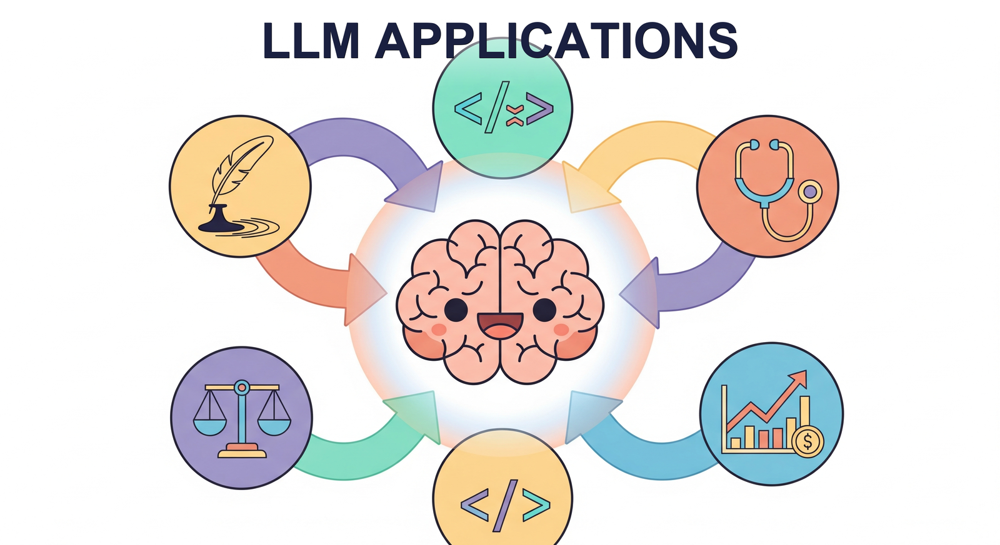

"The best way to predict the future is to build it, and the best way to build it is to give an AI the right tools and the right instructions."
Compass, Relentlessly Practical AI Agent

Chapter Overview
Large language models are reshaping virtually every industry. What began as research curiosities have become production tools that write code, analyze financial reports, assist doctors, detect cybersecurity threats, and power educational platforms used by millions. This chapter surveys the most impactful application domains for LLMs, providing both the technical depth needed to build these systems and the domain awareness required to deploy them responsibly.
The chapter opens with vibe-coding and AI-assisted software engineering, covering how tools like Cursor, Copilot, and Claude Code are transforming how developers write software. It then explores finance and trading applications, healthcare and biomedical AI, recommendation and search systems, cybersecurity applications, education and creative industries, and finally robotics and scientific discovery. Each section examines the unique challenges, architectures, evaluation methods, and regulatory considerations specific to its domain.
By the end of this chapter, you will understand how LLMs are applied across major industries, be able to design domain-specific LLM applications with appropriate safeguards, and appreciate the regulatory and ethical considerations that vary by sector.
This chapter surveys the rich landscape of LLM applications, from code generation and creative writing to healthcare and legal analysis. By examining real-world use cases, you can identify which techniques from earlier chapters (RAG, fine-tuning, agents) best fit each application domain.
Learning Objectives
- Build AI-assisted coding workflows using code completion, agentic coding, and context engineering
- Design financial NLP pipelines for sentiment analysis, report generation, and trading signals
- Understand medical LLM applications and navigate HIPAA/FDA compliance requirements
- Implement LLM-powered recommendation and conversational search systems
- Apply LLMs to cybersecurity tasks including threat intelligence and vulnerability detection
- Evaluate LLM applications in education, legal, and creative domains
- Design embodied AI systems that use LLMs as planners for robots and software agents
- Assess regulatory risks and ethical considerations across different application domains
Prerequisites
- Chapter 10: LLM APIs (chat completions, function calling, structured outputs)
- Chapter 11: Prompt Engineering (few-shot, chain-of-thought, domain-specific prompting)
- Chapter 18: Retrieval-Augmented Generation (RAG pipelines, embedding search)
- Chapter 20: AI Agents (tool use, planning, agentic architectures)
- Chapter 22: Multi-Agent Systems (orchestration, collaboration patterns)
- Domain-specific familiarity helpful but not required for individual sections
Sections
- 26.1 Vibe-Coding & AI-Assisted Software Engineering Code completion and fill-in-the-middle models. Cursor, Copilot, and AI-native IDEs. Agentic coding with Claude Code and Devin. Code generation from specifications, SWE-bench evaluation, context engineering, and risk management.
- 26.2 LLMs in Finance & Trading Financial NLP and sentiment analysis. FinGPT and domain-adapted models. Automated report generation, trading signal extraction, robo-advisory systems, fraud detection, and regulatory compliance considerations.
- 26.3 Healthcare & Biomedical AI Medical LLMs and clinical NLP. Medical question answering and diagnostic support. Drug discovery and molecular generation. Protein structure and genomics applications. HIPAA compliance and FDA regulatory pathways.
- 26.4 LLM-Powered Recommendation & Search LLMs as recommendation engines. Conversational recommendation systems. LLM-powered search with query understanding and result synthesis. User modeling and preference learning with language models.
- 26.5 Cybersecurity & LLMs Threat intelligence and log analysis with LLMs. Vulnerability detection and code auditing. SOC automation and incident response. Adversarial uses of LLMs and defensive countermeasures.
- 26.6 Education, Legal & Creative Industries AI tutoring with Khanmigo and Duolingo. Contract analysis and legal research. Creative writing assistance and co-authorship. Customer support automation. Gaming NPCs and interactive storytelling.
- 26.7 Robotics, Embodied AI & Scientific Discovery LLMs as robot planners and task decomposers. Web automation and browser agents. OS-level agents and computer use. AI for mathematics and theorem proving. Scientific literature mining and hypothesis generation.
What's Next?
In the next part, Part VIII: Evaluation and Production, we ensure your LLM systems work reliably with evaluation, observability, and production engineering.